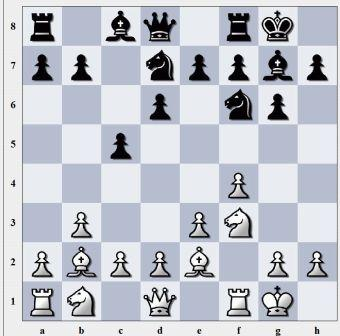

Firstly, you should know the short forms of the pieces. Take a look at the table below.
| Chess Piece | Shortened name |
|---|---|
| Pawn | P or nothing (because the pawn is a very weak piece and there are so many of them, most of the time the pawn is not declared as p |
| Bishop | B |
| Knight | N (Because King and Knight will have the same letter K) |
| Rook | R |
| Queen | Q |
| King | K |
Now, take a look at the chess board. As you can see the sides are numbered 1-8 and the top and bottom have the letters a-h. This is used to coordinate where the peices are. Also we use these numbers so that we know which rows each team uses. White will use rows 1 and 2 when setting up and black will use rows 7 and 8. Take a look at so examples bellow of how we classify where a piece is on the board.
In the image above, I would name the bishop on sqaure d6 as B(for bishop) d6(location) so it will be Bd6. If I wanted to name the white Knight on f3 i would say; Nf3.
In this image, I would name the Black King as Ke8 or the white rook as Rf1
In the above example, the pawn was originaly on e2 so to declare the movement of the pawn I would say: Pe2 to e4.
In the above image, the black bishop would like to move to h3 so I would write that as Bc8 to h3. Then the white King wants to move to g1 so: Kf1 to g1.
In the image above, the bishop would like to take the white knight. We declare a capture with an X. So to show that the bishop on d6 wants to take the Knight on e5 we say: bd6 X Ne5.

In the above image the white knight on f3 wants to take the black Knight on d4 before it takes their queen. We declare this as Nf3 X Nd4
Return Home